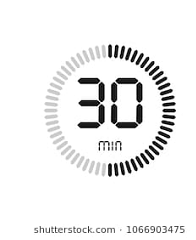
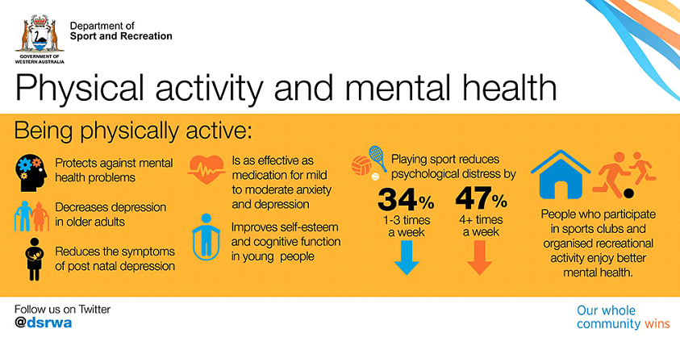
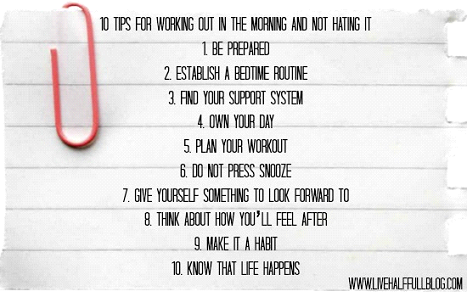

Move next to
school
By: Daniel Szili
No excuses!
We often do not think about how
important is doing some kinds of sport, while being in school. Many people in
school for 6 or more hours, and after that they must go to their jobs. So, it
is understandable that they think they have 0 hours to do sport. But we all
know you must have at least 30 minutes of your day to do some.
You only need 30 minutes

The definition of sport is not only cover team
sports, you can always do a couple of sit-ups or run for 30 minutes. Your body
needs these kinds of exercises, it makes you relaxed and a little bit
healthier.
There is an American study that shows, doing at
least 30 minutes of exercising a day can make a person’s outcome of how they
feel so much better.
·
Less
stress
·
Better
health
·
Reduces
psychological distress
·
Decreases
depression
They had less stress and They were much
healthier than those who did not do basic exercises. You should always find
some time in your days to move.

An Australian study about the
positive effects of physical exercises.
Before you start
Before you start you should look up some
training plans from professional trainers. I can recommend this one, I really
enjoyed doing these exercises: https://myhealthybalance.com.au/assets/ex-phys-guides/beginner_final_lowres.pdf.
After you have chosen your training plan you should consider which part of your
day you want to do the trainings. The best time to do it is in the morning.
Advantages of working out in the morning:
·
You'll eventually get a better workout than you
would later in the day.
·
You'll feel less stressed when you get to work.
·
You'll stoke your appetite for breakfast.
·
You could burn more fat.

Tips
for working out in the morning from www.livehalffulblog.com
The best way
of eating
One of the
most important part of exercising is how you eat. You can do as much exercise
as you want but if you eat garbage food in the meantime you are not going to achieve
anything. You can do okay on your own if you kind of know what kind of foods you
can eat but I recommend a professional menu. There are a ton of websites with
trustworthy diets. I cannot recommend one because everyone have their own
preferences when it comes to food.